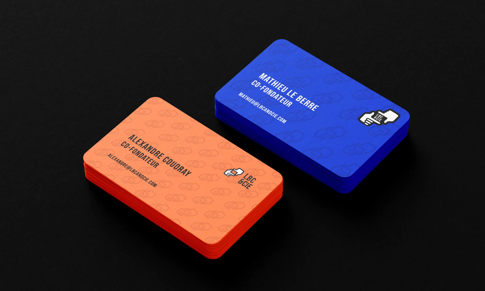
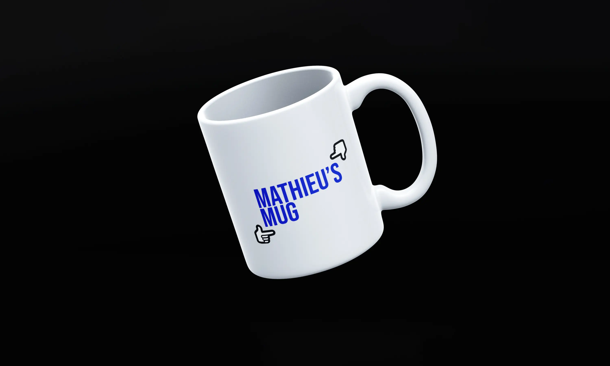
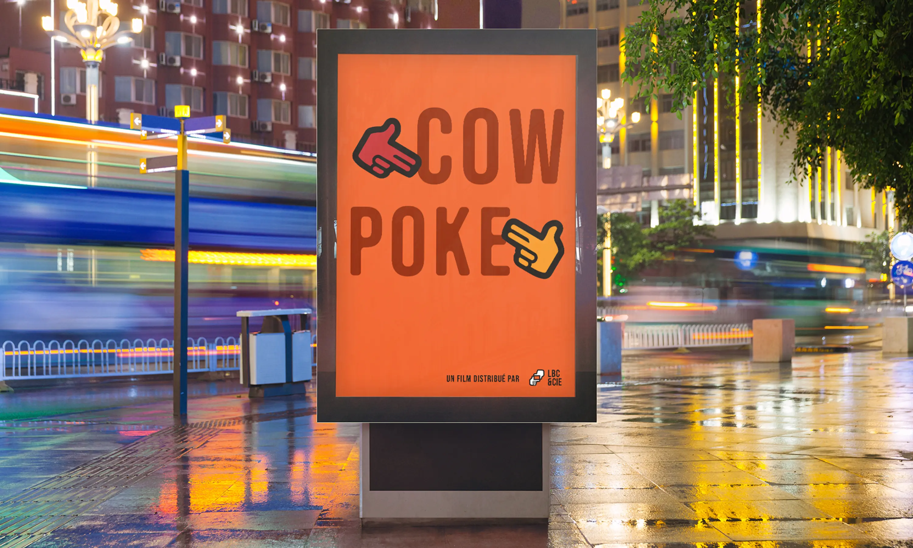

LBC & CIE
Identité Visuelle
Promouvoir des trésors oubliés
Co-fondé par Mathieu Le Berre et Alexandre Coudray, LBC & CIE est une société de distribution de films basée à Paris. En achetant les droits de films pour les diffuser sous format DVD ou Streaming, l'entreprise propose un catalogue de long-métrages d'auteurs auprès d'un public cinéphile.
Un nouveau cadrage
Afin de faire émerger LBC & CIE rapidement sur ce marché, j'ai voulu produire un logo avec un symbole graphique (logomark) et non seulement une typographie (logotype). Ainsi, le but était de s'éloigner de ces sociétés de distribution à l'image froide, esthétique voire trop sophistiqué.
En utilisant un style "sticker" avec des contours dessinés à la main et une géométrie non-parfaite entre les formes, j'ai réussi à donner ce côté "indépendant", d'un groupe de jeunes entrepreneurs qui prends des risques en diffusant des films d'auteurs peu connus.
L'autre idée était de pouvoir réutiliser les éléments du logo, c'est à dire les mains, en un système de déclinaison selon le type de format de communication.
Année
Avril 2022
Read in English üá¨üáß